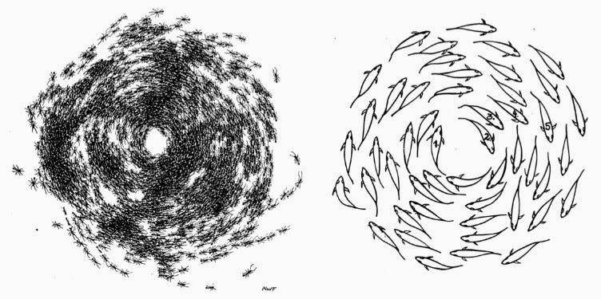
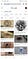
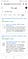
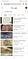

Bugged systems or unexpected behavior…Ant


Ants use a pheromone trail for navigating and communicating but sometimes the residual pheromone that comes from the path they followed before can leave footprints on the ground they are following and this can leads to what is called an ant death spiral like this

Because each ant makes its decisions based on one other ant’s signal the biased signal keeps increasing and can lead to round trip paths of connected nodes that make ants follow looping paths that have no functional value for the colony they deserve and these paths lead to a lot of ants dying by following paths that only make them run. what’s interesting to know is how those turning around are dealing with the social food reserve they have? This behavioral bug curiously resolves itself in nature. How this bug is solved in nature?
It helps to better understand ants for building better systems and we can fear that such kinds of bugs happen to the ones we have already built because we keep stacking them each one taking the input of others.
Are the planets of our solar system and all the elements rotating because of this kind of bug or is it just a natural movement?

